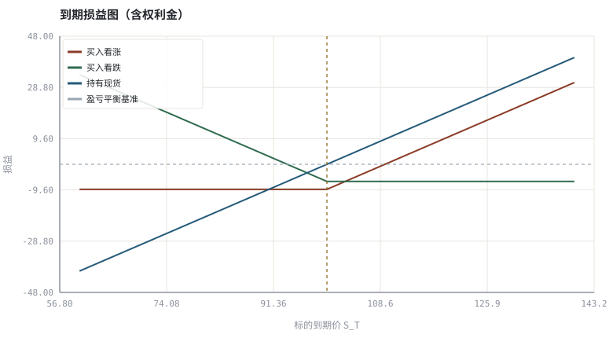
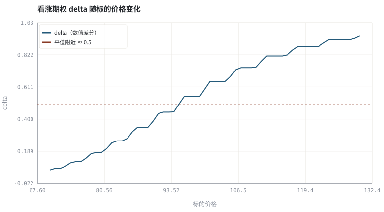

第 12 章期权 payoff、平价关系与希腊字母
或有权益把「折现」升级成「无套利」：价格不由预测决定，而由可复制关系约束。
本章位置：第 09～11 章都是「折现现金流」，本章第一次遇到现金流依赖未来状态的情形；接下来 第 13 章 · 均值-方差、有效前沿与夏普比率 把多个风险资产放进同一个方差—协方差框架。
期权定价是用可复制组合做类型检查：call − put ≡ stock − discounted_strike 是一条编译期恒等式。二叉树只是把终端枚举 + 概率加权折现，等价于一次动态规划。
- 能画出四种基本期权头寸的到期损益并写出分段函数。
- 能用二叉树给出欧式看涨/看跌价格，并验证平价关系。
- 能用数值差分计算 delta 与 gamma，理解对冲的含义。
- 能说明时间价值衰减、隐含波动率与杠杆的关系。
§知识点地图
每个知识点都配了 1～2 个扩展学习链接；本章完整资源清单见 扩展学习。
| # | 知识点 | 扩展学习 | 状态 |
|---|---|---|---|
| 1 | 看涨与看跌 payoff | Option (finance) · Put–call parity | 正文已覆盖 |
| 2 | 多头与空头 | Option (finance) · Put–call parity | 正文已覆盖 |
| 3 | 内在价值与时间价值 | Option (finance) · Put–call parity | 正文已覆盖 |
| 4 | 看跌-看涨平价 | Put–call parity · Option (finance) | 正文已覆盖 |
| 5 | 二叉树与风险中性概率 | Modern portfolio theory · Value at risk | 正文已覆盖 |
| 6 | delta 与 gamma | Option (finance) · Put–call parity | 正文已覆盖 |
| 7 | theta 与 vega | Option (finance) · Put–call parity | 正文已覆盖 |
| 8 | 保证金与非线性风险 | Modern portfolio theory · Value at risk | 正文已覆盖 |
§12.1payoff 是分段函数，不是预测
long call: max(S_T − K, 0) − C | long put: max(K − S_T, 0) − P
把期权当成一段纯函数 payoff(S_T) 最不容易出错：买入是收益无上界/损失有界，卖出恰好镜像；组合多个行权价就能拼出任意分段线性形状。交易 App 里的「期权策略组合」本质上就是这些分段函数的叠加预览。
| 头寸 | 最大收益 | 最大损失 | 主要暴露 |
|---|---|---|---|
| 买入看涨 | 无上界 | 权利金 | 方向上行 + 波动率上行 |
| 卖出看涨 | 权利金 | 无上界 | 方向上行的负凸性、保证金 |
| 买入看跌 | K − P（S→0） | 权利金 | 下行保护 + 波动率 |
| 卖出看跌 | 权利金 | K − P | 愿意在 K 接货 + 保证金 |
§12.2无套利：平价关系与二叉树
C − P = S_0 − K · e^(−rT)
左边是「合成股票」，右边是「现货 − 折现后的行权价」。若两边不等，可以买入便宜的一边、卖出贵的一边锁定无风险收益。用 CRR 二叉树把终端 payoff 按风险中性概率折现，得到的 C、P 会自然满足平价关系——这是可运行的验证，不是需要相信的结论。
u = e^(σ√Δt), d = 1/u, p = (e^(rΔt) − d)/(u − d)
§12.3希腊字母就是偏导数
Δ = ∂V/∂S | Γ = ∂²V/∂S² | Θ = ∂V/∂t | ν = ∂V/∂σ
对冲的工程含义是把一阶暴露调到零，再监控二阶残差。gamma 大的头寸需要更频繁地重平衡，theta 是这种维护的时间成本。第 30 章会把同样的「敏感度—再平衡」结构用于杠杆与保证金。
卖出期权的收益分布是「多次小赚 + 偶发巨亏」，最大损失在理论上无上界；保证金与强平发生在尾部，而不是平均情形。
§Python 分析实例
实验 12-1 · 到期损益、二叉树定价、平价关系与 delta
#!/usr/bin/env python3
# -*- coding: utf-8 -*-
"""用标准库实现 CRR 二叉树，验证平价关系，并用中心差分求 delta。
数据为合成数据或模型示意，仅用于教学，不构成投资建议。
"""
from __future__ import annotations
import math
import pathlib
import random
import statistics
import sys
sys.path.insert(0, str(pathlib.Path(__file__).resolve().parents[3] / "tools"))
from chart import Chart, candlestick, heatmap, BLUE, RED, GREEN, AMBER
FIG = pathlib.Path(__file__).resolve().parents[1] / "fig"
FIG.mkdir(exist_ok=True)
random.seed(7)
# ---- 参数区 ----
S0, K = 100.0, 100.0
R, SIGMA, T = 0.03, 0.20, 1.0
STEPS = 60 # 二叉树步数
# ---- 计算与作图 ----
def crr(S, kind):
dt = T / STEPS
u, d = math.exp(SIGMA * math.sqrt(dt)), math.exp(-SIGMA * math.sqrt(dt))
p = (math.exp(R * dt) - d) / (u - d)
disc = math.exp(-R * dt)
total = 0.0
for j in range(STEPS + 1):
st = S * u ** j * d ** (STEPS - j)
prob = math.comb(STEPS, j) * p ** j * (1 - p) ** (STEPS - j)
val = max(st - K, 0.0) if kind == "call" else max(K - st, 0.0)
total += prob * val
return (disc ** STEPS) * total
call, put = crr(S0, "call"), crr(S0, "put")
parity = (call - put) - (S0 - K * math.exp(-R * T))
eps = S0 * 0.01
delta = (crr(S0 + eps, "call") - crr(S0 - eps, "call")) / (2 * eps)
gamma = (crr(S0 + eps, "call") - 2 * call + crr(S0 - eps, "call")) / (eps * eps)
s_grid = [60.0 + i * 1.0 for i in range(81)]
call_pl = [max(s - K, 0.0) - call for s in s_grid]
put_pl = [max(K - s, 0.0) - put for s in s_grid]
stock_pl = [s - S0 for s in s_grid]
c = Chart(FIG / "12-payoff.svg", "到期损益图（含权利金）", xlabel="标的到期价 S_T", ylabel="损益")
c.line(s_grid, call_pl, RED, label="买入看涨")
c.line(s_grid, put_pl, GREEN, label="买入看跌")
c.line(s_grid, stock_pl, BLUE, label="持有现货")
c.hline(0.0, "#9aa6b2", label="盈亏平衡基准")
c.vline(K, AMBER, label="行权价 K")
print("损益图:", c.save())
s_delta = [70.0 + i * 1.0 for i in range(61)]
d_values = [(crr(s + eps, "call") - crr(s - eps, "call")) / (2 * eps) for s in s_delta]
d = Chart(FIG / "12-delta.svg", "看涨期权 delta 随标的价格变化", xlabel="标的价格", ylabel="delta")
d.line(s_delta, d_values, BLUE, label="delta（数值差分）")
d.hline(0.5, RED, label="平值附近 ≈ 0.5")
print("delta 图:", d.save())
print("CRR 看涨=%.4f 看跌=%.4f | 平价残差=%.6f | delta=%.4f gamma=%.6f" %
(call, put, parity, delta, gamma))操作：把 STEPS 依次设为 10 / 60 / 200，观察平价残差与定价的收敛；再把 SIGMA 调大，看期权价格与 delta 曲线如何变化。 预期与判读：只要用同一棵树算 call 与 put，平价残差应接近 0（数值精度量级）；delta 在平值附近约 0.5，向实值/虚值两端分别趋于 1 与 0。希腊字母就是数值导数，不需要额外公式。
改参数看趋势：把 K 从 100 改成 120，delta 曲线整体右移，说明行权价改变了敏感度分布。 文件位置：part2/12-option-payoff/code/12-option.py


代码块右上角可一键复制；仓库里的 code/*.py 由 tools/extract_code.py 从这些代码块自动抽取。脚本只用标准库、固定 random.seed(7)，运行后写出 fig/*.svg；批量运行用 ./tools/run_python.sh。
§本章参考资料
按本章知识点挑选的精读资料；更多检索入口见 扩展学习。
Option (finance)
百科 · 参考资料或有权益与非线性 payoff
怎么用：或有权益与非线性 payoffhttps://en.wikipedia.org/wiki/Option_(finance)
Put–call parity
百科 · 参考资料看涨看跌与现货的无套利约束
怎么用：看跌-看涨平价的无套利推导https://en.wikipedia.org/wiki/Put%E2%80%93call_parity
Black–Scholes model
百科 · 参考资料连续时间无套利定价闭式解
怎么用：连续时间闭式解，与二叉树结果对照https://en.wikipedia.org/wiki/Black%E2%80%93Scholes_model
Cboe Options Institute
机构 · 参考资料期权 payoff、希腊字母的官方教学材料
怎么用：交易所官方的期权与希腊字母教学材料https://www.cboe.com/education/
§常见误区
- 把权利金当成最大损失的唯一来源，忽略卖出方的无限损失。
- 用历史波动率直接当隐含波动率。
- 把 delta 当成常数，忽略 gamma 带来的再平衡需求。
- 忽略流动性差的期权合约上买卖价差可以吞掉全部时间价值。
§习题与思考
- 用示例的二叉树给 K=90/100/110 三个行权价定价，画出波动率微笑需要什么额外信息。
- 推导平价关系，并指出股息存在时公式应如何修改。
- 用中心差分补出 vega（对 σ 求导）并与 delta 比较量纲。
§扩展学习
以下资料按本章知识点挑选，可直接精读或对照真实数据；知识点地图里每一条也挂了 1～2 个直达链接。
- Option (finance)（百科）：或有权益与非线性 payoff
Option (finance) - Put–call parity（百科）：看涨看跌与现货的无套利约束
Put–call parity - Greeks (finance)（百科）：delta/gamma/theta/vega 敏感度
Greeks (finance) - Implied volatility（百科）：从期权价格反解出的市场预期波动
Implied volatility - Cboe Options Institute（机构）：期权 payoff、希腊字母的官方教学材料
Cboe Options Institute
继续扩展：在 Google Scholar 检索本章相关论文 · 在 MIT OCW 检索配套课程 · 在 arXiv 检索预印本 · 全书参考资源总表 · 附录 A 速查与链接总表
§延伸阅读与内链
- 第 30 章 · 仓位、杠杆、VaR/CVaR 与凯利上界 杠杆、保证金与强平；第 29 章 · 订单执行、滑点与市场冲击 期权组合的执行成本。